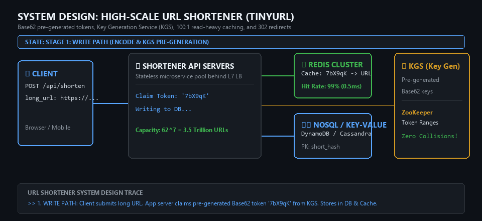

21 - System Design: Scalable URL Shortener (TinyURL / Bitly)
Executive Summary: Designing a global URL shortener (like TinyURL or Bitly) is the quintessential system design interview question because it covers the end-to-end gamut: back-of-the-envelope capacity planning, mathematical encoding (Base62 vs. MD5), distributed unique key generation (KGS), 100:1 read-heavy caching, HTTP redirect status code trade-offs (301 vs. 302), and asynchronous analytics pipelines.
🏢 Real-World Deep Dives: Detailed case studies of how Google & Netflix implement this in production are documented in REAL_WORLD_EXAMPLES.md.
⏱️ Prerequisites: What You Need to Know First
To get the most out of this module, make sure you understand:
- 01 - Client-Server Networking: HTTP status codes (
301 Moved Permanentlyvs302 Found). - 06 - Relational & Non-Relational Databases: Key-value stores vs relational schemas for O(1) lookups.
- 10 - Caching Patterns: Cache-Aside pattern for read-heavy workloads.
- 16 - Consistent Hashing: Sharding database partitions by short hash.
🧒 The 30-Second Version (ELI5)
Imagine you go to a theatre with a huge, heavy winter coat:
- The coat check attendant takes your bulky jacket and hands you a tiny plastic token with a number on it:
"#42". - When the show ends, you hand the attendant plastic token
"#42". They instantly retrieve your heavy jacket from the rack and return it to you. - You don't carry the bulky jacket around the crowded lobby; you only carry the tiny token!
- In computer terms: The bulky jacket is a massive 500-character URL (
https://example.com/products/deals/item?category=electronics&ref=affiliate_99824), the plastic token is the short URL (https://tiny.url/7bX9qK), and the coat rack is a distributed Redis and NoSQL database.
🍕 Everyday Analogy
| System Component | Coat Check Analogy | Technical Reality in TinyURL |
|---|---|---|
| Long URL | Bulky, 10-pound winter coat | Full 2,048-character destination URL |
| Short Code | Tiny plastic numbered token (#42) |
7-character Base62 string (7bX9qK) |
| Token Dispenser | Roll of pre-printed ticket stubs | Key Generation Service (KGS) with ZooKeeper ranges |
| Coat Storage Rack | Huge basement storage shelves | Distributed NoSQL database (DynamoDB / Cassandra) |
| Fast Pickup Desk | Front counter holding the 50 most popular coats | In-memory Redis cache cluster (0.5 ms lookups) |
| Visitor Counter | Tally clicker counting every coat retrieved | Asynchronous Kafka event stream for click analytics |
🧩 The Problem It Solves
Why URL Shortening is Hard at Scale
At small scale, creating a short URL is trivial: SELECT id FROM urls and return tiny.url/id.
However, at production internet scale:
- Capacity & Collision Free: The service must support billions of URLs without running out of combinations and without two servers generating the same short code.
- Extreme Read Asymmetry: 100:1 read-to-write ratio (11,600 reads/sec vs 116 writes/sec). Database disks cannot handle direct read traffic without collapsing.
- Sub-Millisecond Redirection: Users clicking links expect instantaneous redirects (<10 ms total network turnaround).
- Security & Anti-Scraping: Auto-incrementing integers (
tiny.url/1,tiny.url/2) allow competitors to scrape the entire database simply by iterating id+1.
🖼️ Picture It: Architecture & Flow
High-Resolution URL Shortener Animation
Below is an animated trace of the Write Path (KGS token claim) and Read Path (Redis Cache HIT with 302 Redirect):

High-Level Architecture Diagram
flowchart TD
subgraph Clients["Clients & Edge Tier"]
User["👤 Mobile / Web User"]
Edge["🌐 Cloudflare CDN Edge"]
User -->|1. GET /7bX9qK| Edge
end
subgraph AppTier["Application Tier"]
LB["⚖️ L7 Load Balancer"]
Edge -->|Cache Miss| LB
S1["App Server 1"]
S2["App Server 2"]
LB --> S1
LB --> S2
end
subgraph DataTier["Data & Cache Tier"]
Redis[("⚡ Redis Cluster (LRU)<br/>Stores top 20% hot URLs (0.5ms)")]
DB[("🗄️ DynamoDB / Cassandra<br/>PK: short_hash<br/>Val: long_url, user_id, created_at")]
S1 -->|Check Cache| Redis
Redis -.->|Miss: Read DB| DB
end
subgraph KGSCluster["Key Generation Tier"]
ZK["🐘 ZooKeeper / etcd<br/>(Allocates token ranges)"]
KGS["🔑 KGS (Key Gen Service)<br/>Pre-generates Base62 tokens"]
ZK --> KGS
KGS -->|Pre-allocated Block| S1
KGS -->|Pre-allocated Block| S2
end
subgraph AnalyticsTier["Asynchronous Analytics"]
Kafka["📜 Kafka Topic: 'url-clicks'"]
S1 -.->|Async Fire & Forget| Kafka
AnalyticsWorker["📊 Analytics Consumer -> ClickHouse DB"]
Kafka --> AnalyticsWorker
end
style Edge fill:#161b22,stroke:#58a6ff,stroke-width:2px;
style Redis fill:#161b22,stroke:#3fb950,stroke-width:2px;
style DB fill:#161b22,stroke:#d29922,stroke-width:2px;
style KGS fill:#161b22,stroke:#a371f7,stroke-width:2px;
style Kafka fill:#161b22,stroke:#f85149,stroke-width:2px;🔢 Walk-Through with Real Numbers
Let's execute a formal back-of-the-envelope estimation for a global system:
1. Traffic Estimations
- New Shortened URLs Created (Writes): 100 Million / month
- URL Redirections (Reads): 100:1 ratio ⇒ 10 Billion / month
- Writes per second (WPS):
- Reads per second (RPS):
2. Storage Estimations (10-Year Horizon)
- Assume average URL record size = 500 bytes (
short_code: 7B,long_url: 400B,created_at: 8B,user_id: 16B,metadata: 69B). - Total records in 10 years: 100M/month × 12 months × 10 years = 12 Billion records.
6 TB of data over 10 years easily fits in a partitioned NoSQL database.
3. Memory & Caching Estimations (Pareto 80/20 Rule)
- 20% of the URLs generate 80% of daily traffic.
- Daily read requests: 10 Billion / 30 ≈ 330 Million requests/day.
- Total data requested daily: 330M × 500 bytes ≈ 165 GB/day.
- To cache 20% of daily requests:
A small 3-node Redis cluster with 32 GB RAM each easily holds the entire hot working set in memory!
4. Base62 Capacity Math
Using alphanumeric characters [0-9a-zA-Z] (62 unique characters):
- With a 6-character short URL: 626 ≈ 56.8 Billion unique URLs.
- With a 7-character short URL:
At 100M writes/month, 7 characters will last over 2,900 years!
⚙️ How It Works Under the Hood
1. Token Generation: Base62 vs. MD5 Hash Collisions
Approach 1: MD5 / SHA-256 Hashing (Flawed)
- Hash long URL: MD5(url) ⇒ 128-bit hex string.
- Take first 7 characters:
d41d8cd. - Fatal Flaw: Hash collisions! Two completely different URLs can produce the same first 7 characters. You must query the database to detect collisions and append salt (
url + salt), triggering expensive database round-trips on every single write.
Approach 2: Base62 Encoding of Distributed Sequence IDs (Production Gold Standard)
- Maintain a 64-bit unique integer ID generator.
- Convert the integer directly to Base62:
- ID 100,000,000 ⇒ "006LAze"
- ID 100,000,001 ⇒ "006LAzf"
- Mathematical Guarantee: Because integers are unique, Base62 strings are 100% collision-free by definition! Zero database collision checks required.
2. The Key Generation Service (KGS)
How do multiple application servers generate unique 64-bit integers without locking a central database sequence?
- We deploy a dedicated Key Generation Service (KGS) backed by ZooKeeper or etcd.
- ZooKeeper allocates discrete Token Ranges to each application server:
- Server 1 is assigned IDs:
[1,000,000 to 1,999,999] - Server 2 is assigned IDs:
[2,000,000 to 2,999,999]
- Server 1 is assigned IDs:
- Each server maintains its counter entirely in local memory with zero network communication!
- If Server 1 restarts, it simply requests a fresh range from ZooKeeper. The skipped IDs in the old range are harmless because 3.52 Trillion keys are available.
3. HTTP 301 vs. HTTP 302 Redirection
When a user requests https://tiny.url/7bX9qK, the server responds with an HTTP redirect:
| HTTP Status Code | Meaning | Browser Behavior | Impact on Analytics |
|---|---|---|---|
301 Moved Permanently |
URL is permanently at new destination | Browser caches redirect locally; never contacts TinyURL server again! | ❌ Destroys click analytics; cannot count future clicks |
302 Found (Recommended) |
Temporary redirect | Browser always contacts TinyURL server on every single click | ✅ Captures 100% of click analytics, referrer, and user-agent |
⚖️ Trade-Offs & Decision Matrix
| Dimension | Relational DB (PostgreSQL) | NoSQL Key-Value (DynamoDB / Cassandra) |
|---|---|---|
| Lookup Performance | Fast with B-tree index on short_code (O(\log N)) |
Ultra-Fast primary key point lookup (O(1)) |
| Horizontal Scalability | Requires complex manual sharding schemes | Seamless native hash ring partitioning |
| Operational Overhead | High at 10 TB scale | Managed serverless (zero maintenance) |
| Recommendation | Good for MVP (<10M records) | Industry Standard for Global Scale |
🚫 Common Mistakes & Production Pitfalls
-
Using 301 Redirects when Click Tracking is Required:
- Pitfall: Returning
301 Moved Permanently. - Result: The user's browser permanently caches the redirect. Every subsequent click goes straight to the destination website without ever hitting TinyURL servers, cutting click analytics revenue to zero. Always use
302 Found(or307 Temporary Redirect) if analytics are monetized.
- Pitfall: Returning
-
Predictable Sequential IDs (Scraping Vulnerability):
- Pitfall: Incrementing token IDs strictly by +1 without shuffling:
0000001,0000002. - Result: Competitors can easily write a bot that iterates from 1 to 1,000,000, scraping every secret internal document, unlisted Zoom link, and private Google Doc ever shortened by users.
- Fix: Use a simple Feistel cipher or token shuffling bit-mask to pseudo-randomize integer output before Base62 encoding.
- Pitfall: Incrementing token IDs strictly by +1 without shuffling:
-
Synchronous Analytics Logging:
- Pitfall: Writing an analytics record to Postgres (
INSERT INTO clicks (url_id, ip, timestamp)...) inside the user redirection request thread. - Result: Increases redirect latency from 1 ms to 25 ms, creating database write lock contention.
- Fix: Emit click events asynchronously to an Apache Kafka topic; background workers batch-insert analytics into ClickHouse or BigQuery.
- Pitfall: Writing an analytics record to Postgres (
💻 Try It Yourself: Python Simulation
The companion simulation script demo.py implements:
- Base62 encoding/decoding of 64-bit sequence IDs into 7-character tokens.
- A simulated Key Generation Service (KGS) managing token block allocations.
- Cache-Aside Redis simulation demonstrating latency drop from 5.28 ms down to 0.001 ms.
- 1,000-request high-throughput benchmark demonstrating 100% cache hit rates and asynchronous click tracking.
Run it locally in your terminal:
python demo.py
🌍 Where You'll See It in Production
- Bitly: Manages over 10 billion clicks per month across hundreds of millions of branded short links. Uses distributed caching and Apache Cassandra storage.
- Twitter / X (
t.co): Automatically wraps every link posted on X inside at.coshort URL to perform malicious phishing scanning, malware detection, and engagement analytics. - LinkedIn (
lnkd.in): Shortens links shared in feeds to monitor traffic sources and protect users from fraud.
🎯 Top Interview Questions & Deep Answers
Q1: "Why is Base62 chosen for URL shorteners instead of Base64 or Base16 (Hex)?"
Interviewer Goal: Testing encoding knowledge and web URL standard compliance.
Model Answer:
"Base62 uses precisely the 62 alphanumeric characters: [0-9], [a-z], and [A-Z]:
- URL Safety: Standard Base64 introduces
+and/(and padding=), which are reserved characters in HTTP URLs. In standard URL queries,+is interpreted as a space, and/is interpreted as a path delimiter. While URL-safe Base64 exists (substituting-and_), Base62 consists strictly of pure alphanumeric characters that never require URL encoding or escaping in any browser, SMS, or QR code. - Compact Density: Compared to Base16 (Hexadecimal:
0–9, a–f), Base62 packs vastly more entropy per character: 627 ≈ 3.52 Trillion combinations vs. 167 ≈ 268 Million combinations. Base62 keeps short URLs compact."
Q2: "How do you handle custom alias URLs (e.g., tiny.url/my-custom-vanity-name)?"
Interviewer Goal: Checking database schema design and edge-case handling.
Model Answer: "When users request a custom alias:
- Schema Check: We query the database to verify if
custom_aliasalready exists. - Collision Prevention: In a relational or NoSQL database,
short_codeis the primary key or unique index. We execute an atomic conditional write:- In DynamoDB:
attribute_not_exists(short_hash) - In SQL:
INSERT INTO urls (short_code, long_url) VALUES ('my-custom-vanity-name', ...) ON CONFLICT DO NOTHING
- In DynamoDB:
- If collision occurs: Return HTTP
409 Conflictwith a user-friendly error message: 'Alias already taken, please choose another.' - Reserved Names: Enforce an application-level blocklist preventing users from claiming reserved routes like
/api,/admin,/login, or/terms."
Q3: "What happens when the Redis cache becomes full in a URL shortener?"
Interviewer Goal: Testing cache eviction policies under read-heavy skew.
Model Answer: "Because URL redirection follows the Pareto principle (the top 20% of URLs drive 80% of traffic), we configure the Redis cluster with an explicit memory limit and eviction policy:
maxmemory 32gbmaxmemory-policy allkeys-lru(Least Recently Used) When memory is saturated, Redis automatically evicts URLs that haven't been accessed for the longest time. If an evicted short URL is clicked a month later:
- Application suffers a Cache Miss.
- Application queries the persistent NoSQL database in 5 ms.
- Application writes the record back into Redis and serves the redirect. The system gracefully degrades without dropping any requests or crashing."
Q4: "How do you implement URL expiration (TTLs) at scale?"
Interviewer Goal: Evaluating background storage maintenance strategies.
Model Answer: "If URLs have optional expiration dates (e.g. valid for 30 days):
- Passive Expiration (Lazy Check):
- When a user clicks a short URL, the application checks
IF NOW() > expires_at. - If expired, return HTTP
404 Not Foundimmediately, and trigger an asynchronous message to delete the row.
- When a user clicks a short URL, the application checks
- Active Sweeping (Background Cleanup):
- Continuously scanning billions of records with
DELETE WHERE expires_at < NOW()is too heavy for database performance. - Instead, we leverage native database TTLs: DynamoDB and Cassandra support automatic background TTL eviction natively without consuming application CPU or IOPS.
- Alternatively, partition database tables by month (
urls_2026_01,urls_2026_02), and drop old monthly tables entirely in a single O(1) DDL drop operation."
- Continuously scanning billions of records with
Q5: "How do you protect a public URL shortener from malicious links and spam abuse?"
Interviewer Goal: Assessing production security, compliance, and abuse prevention.
Model Answer: "Public URL shorteners are prime targets for phishing, malware, and spam. Production platforms enforce multi-layered defenses:
- Rate Limiting: Enforce token-bucket rate limits per IP address and authenticated user account (e.g., max 10 URL creations per minute).
- Malicious Domain Blacklisting: During the write path, check the destination domain against Google Safe Browsing API, Spamhaus, and internal phishing blocklists before accepting the write.
- Async Malware Scanner: Push newly submitted URLs to a Kafka scanning pipeline where headless browser workers fetch the target site and analyze page content for malware signatures. If malicious, flag the record in Redis/DB to display a warning splash screen rather than immediate redirection.
- Spam Honeytraps: Deploy CAPTCHAs upon detecting abnormal automated creation spikes."
✅ Check Yourself: Flash Quiz
1. Why does Base62 with 7 characters provide 3.52 Trillion combinations while Base16 with 7 characters only provides 268 Million?
Because the radix (base) is exponentially multiplied by the length: 627 ≈ 3.52 × 1012, whereas 167 ≈ 2.68 × 108. Base62 has 62 available alphanumeric options per slot (`[0-9a-zA-Z]`), giving it over 13,000 times more combinations than hexadecimal.
2. Why should an analytics-focused URL shortener return HTTP 302 Found instead of HTTP 301 Moved Permanently?
Because browsers permanently cache HTTP 301 redirects on the client machine and will never contact the shortener server again for subsequent clicks. HTTP 302 forces browsers to contact the shortener on every visit, allowing 100% accurate tracking of clicks, referrers, devices, and countries.
3. How does the Key Generation Service (KGS) prevent duplicate short codes without acquiring database locks?
By allocating pre-reserved token blocks (e.g., Server 1 gets 100,000 to 199,999; Server 2 gets 200,000 to 299,999) using ZooKeeper or etcd. Each server increments its counter purely in local memory with zero cross-server locking or network collisions.
📚 Go Deeper: Recommended Reading
- System Design Interview – An Insider's Guide (Volume 1) by Alex Xu — Chapter 8: Design a URL Shortener.
- Designing Data-Intensive Applications by Martin Kleppmann — Chapter 1: Reliability, Scalability, and Maintainability.
- Ilya Grigorik's High Performance Browser Networking — HTTP Redirects and Latency Impact.
- Bitly Engineering Blog: How Bitly Scales High-Volume Redirections.
🔗 Related Modules
- 01 - Client-Server Networking: HTTP 301 vs 302 redirect protocol mechanics.
- 06 - Relational & Non-Relational Databases: Key-value storage models.
- 10 - Caching Patterns: Cache-Aside pattern for read-heavy scale.
- 16 - Consistent Hashing: Distributing URL partitions across database clusters.